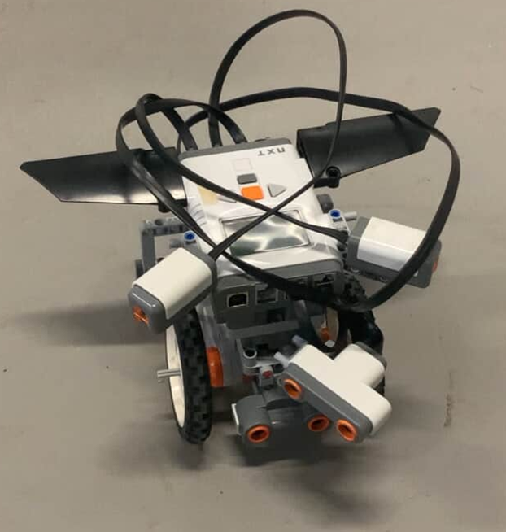

Au cours du deuxième semestre, en sciences de l'ingénieur, il nous était
demandé de construire un robot se dirigeant automatiquement vers une source de lumière
tout en évitant des obstacles (briques).
Ce travail de groupe correspond tout à fait
à mon choix de poursuite d'études, car il nous fallait construire physiquement
le robot ainsi que son programme pour le déplacer.
Nous avions à disposition 2 moteurs, 2 capteurs ultrasons, 2 capteurs de lumière et des
briques de construction.
Malgré certaines difficultés, nous sommes fiers de notre création : ERROR 404
Ce projet fut très formateur et a permis de créer des liens entre les passionnés.

Cliquez sur l'image